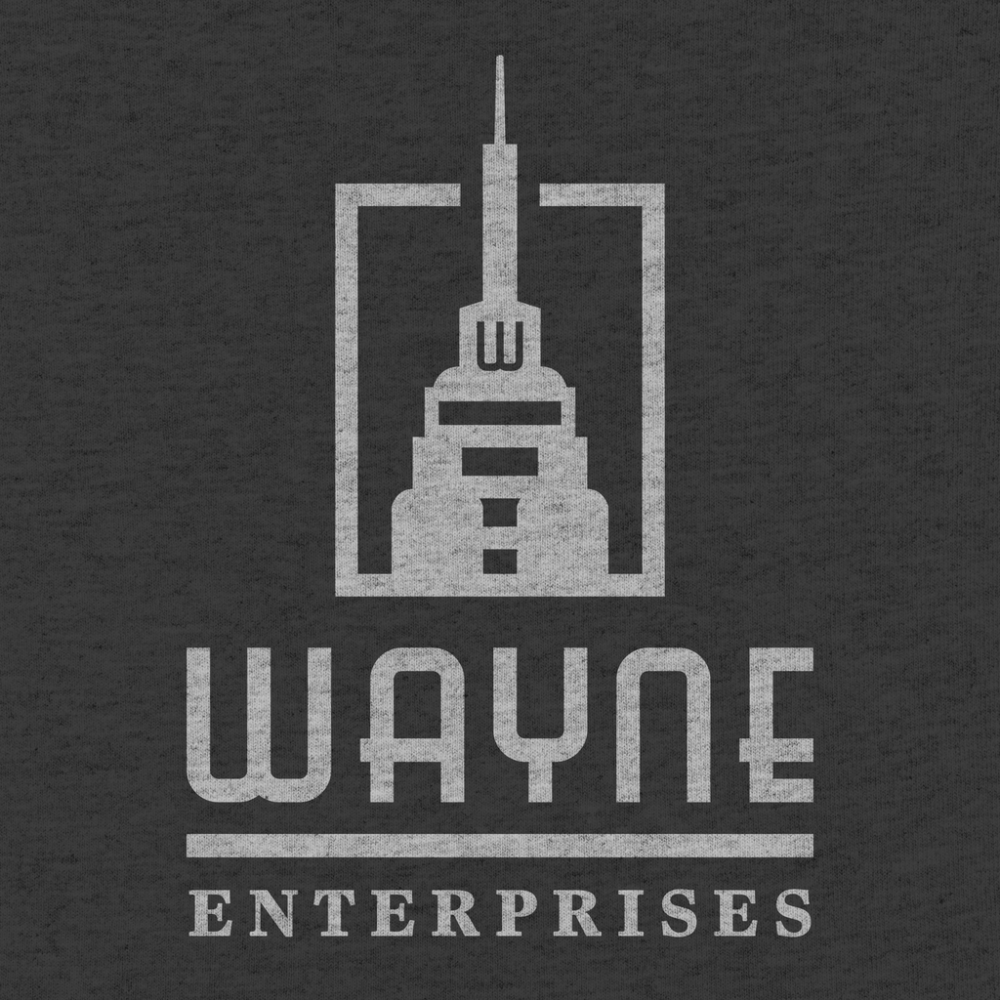

Founded by merchant ancestors of the Wayne family in the 17th century as a merchant house, it is among the oldest companies in the DC Universe. The company began as a dozen businesses started by brothers Judge Solomon Wayne and Joshua Wayne. With the revenue generated Judge Wayne essentially built Gotham City by hiring Cyrus Pinkney. Judge Wayne's son and heir, Alan Wayne, officially made it a corporate company in the 19th century. Alan Wayne, who was Bruce Wayne's great-great-grandfather, erected Wayne Shipping, Wayne Chemical, and Wayne Manufacturing. All these companies were energized by the world's Industrial Revolution; more branches were created and diversified while others dwindled and were discarded. Along the years, it has developed from a merchant house to a large multinational conglomerate company in the DC Universe; exceeding LexCorp, Stagg Enterprises, and Ferris Aircraft. Under the control of Patrick and Laura Wayne, Wayne Enterprises became a "green company" and environmentally conscious from that time forward.